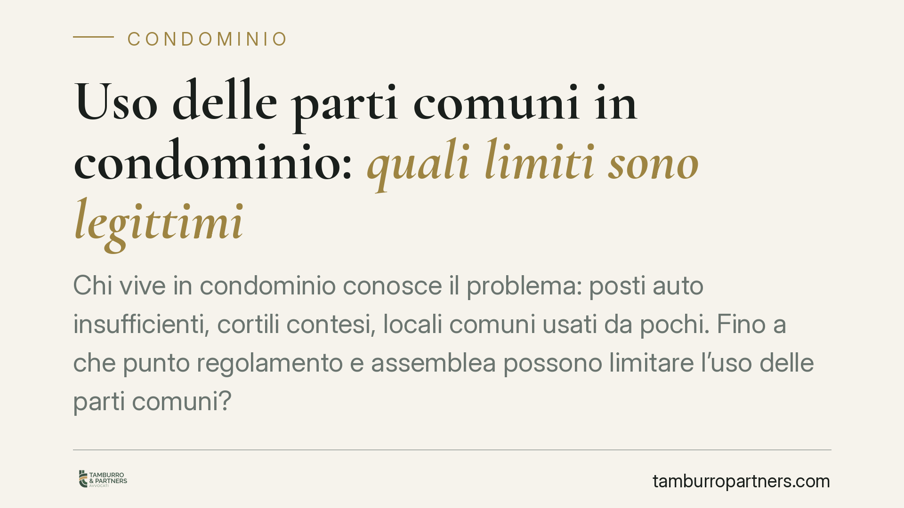

Uso delle parti comuni in condominio: quali limiti sono legittimi
Chi vive in condominio conosce il problema: posti auto insufficienti, cortili contesi, locali comuni usati da pochi. Fino a che punto regolamento e assemblea possono limitare l'uso delle parti comuni? La giurisprudenza più recente ribadisce un equilibrio preciso tra disciplina dell'uso e divieto di esclusione. Vediamo cosa dice la norma e cosa fare in pratica.

Il caso: limiti all'uso delle cose comuni
Il tema è ricorrente. In un edificio i posti auto nel cortile sono meno dei condomini: non tutti possono parcheggiare contemporaneamente. L'assemblea delibera una turnazione. Un condomino impugna, lamentando una compressione del proprio diritto.
La questione tocca il cuore del rapporto tra uso individuale e uso collettivo delle parti comuni. La giurisprudenza di legittimità, in linea con un orientamento ormai consolidato, conferma che il regolamento e l'assemblea possono disciplinare e limitare l'uso delle cose comuni, a condizione che la disciplina sia proporzionata e non escluda del tutto un partecipante.
Inquadramento normativo: art. 1102 e 1118 c.c.
Il riferimento centrale è l'art. 1102 c.c., secondo cui ciascun partecipante può servirsi della cosa comune purché non ne alteri la destinazione e non impedisca agli altri di farne pari uso. È la norma che fissa il doppio limite di ogni utilizzo: rispetto della destinazione e salvaguardia del pari diritto degli altri.
L'art. 1118 c.c. collega il diritto sulle parti comuni al valore della singola unità, espresso in millesimi. Da qui il principio: quando un bene non è fruibile simultaneamente da tutti — come accade per posti auto in numero inferiore ai condomini — la disciplina dell'uso può avvenire in proporzione alle quote, anche attraverso turnazioni o assegnazioni a rotazione.
Il confine è netto. Disciplinare e limitare l'uso è legittimo; escludere stabilmente un condomino dal godimento del bene non lo è, perché lede il contenuto minimo del diritto di comproprietà.
Cosa cambia per assemblea e condomino
Per l'assemblea significa disporre di uno strumento concreto per gestire beni comuni contesi, senza dover attendere accordi unanimi su ogni dettaglio. Una delibera che organizza la turnazione dei posti auto, se proporzionata e non discriminatoria, rientra tra le decisioni legittime a maggioranza.
Per il singolo condomino cambia la prospettiva di tutela. Non ogni limitazione è impugnabile con successo: va dimostrato che la disciplina ecceda i limiti dell'art. 1102 c.c., alterando la destinazione del bene o azzerando il proprio diritto d'uso.
Resta decisiva la distinzione tra due vizi diversi:
- la delibera annullabile va impugnata entro 30 giorni (art. 1137 c.c.), decorrenti dall'approvazione per i presenti e dalla comunicazione del verbale per gli assenti;
- la delibera nulla — ad esempio quella che esclude radicalmente un condomino dall'uso di un bene comune — può essere fatta valere senza vincolo temporale, perché incide su diritti indisponibili.
Confondere i due piani è l'errore più frequente: chi lascia decorrere i 30 giorni su una delibera solo annullabile perde ogni tutela.
Checklist operativa per amministratori
- Verifica la natura del bene: stabilisci se è fruibile da tutti contemporaneamente o se richiede una disciplina dell'uso (turnazione, assegnazione a rotazione).
- Motiva la delibera con criteri oggettivi e proporzionali ai millesimi, evitando scelte che favoriscano singoli condomini senza ragione.
- Assicurati che nessun partecipante resti stabilmente escluso: prevedi meccanismi che garantiscano a ciascuno, nel tempo, un uso effettivo.
- Distingui in anticipo i vizi: una disciplina dell'uso è terreno di annullabilità (30 giorni); un'esclusione totale sfocia nella nullità.
- Metti a verbale in modo chiaro il criterio adottato e le modalità di rotazione, così da rendere la decisione verificabile e difendibile.
È opportuno sottoporre a un professionista la bozza di qualsiasi delibera che limiti l'uso delle parti comuni, specie quando il bene è conteso o il regolamento contiene clausole datate. Una verifica preventiva riduce il rischio di impugnazioni e di decisioni inefficaci.
Un principio di equilibrio
Il quadro normativo premia l'equilibrio, non la prevaricazione. L'assemblea può organizzare l'uso delle cose comuni per renderlo possibile a tutti, non per sottrarlo ad alcuni. Tradotto in pratica: regole sì, esclusioni no. È questa la linea che separa una gestione legittima da una delibera destinata a cadere.
Ogni condominio ha una storia a sé.
Se gestisci un'amministrazione e vuoi un confronto su una specifica questione condominiale, scrivi allo studio. Ti rispondiamo entro un giorno lavorativo.